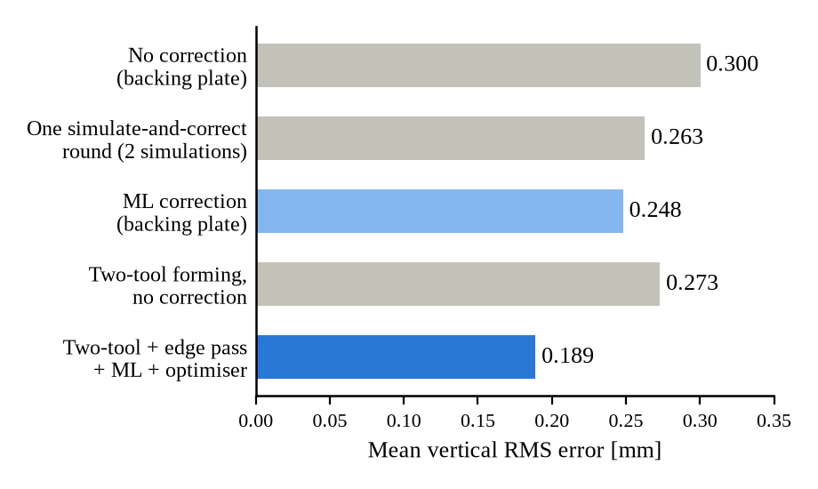
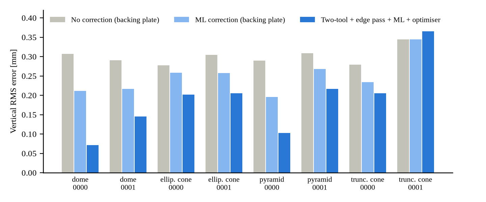
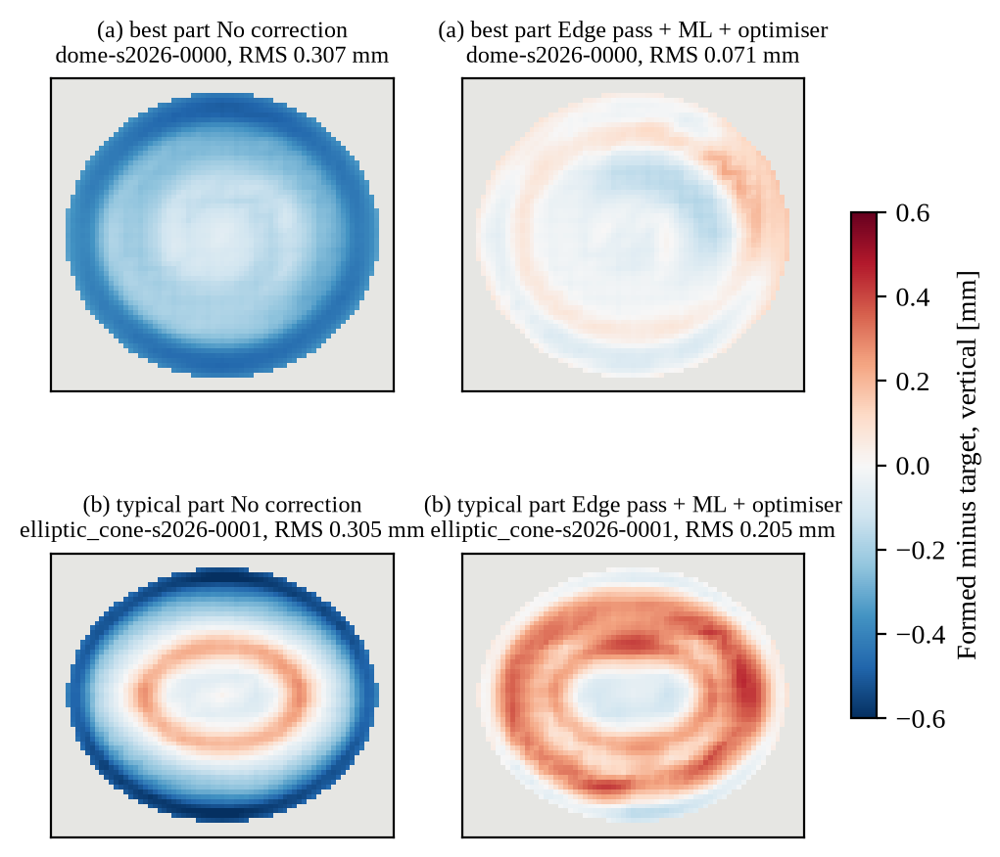

In robotic incremental sheet forming, a tool deforms a clamped sheet one contour at a time. When the tool and clamps are released the elastic part of the deformation recovers, and the part comes out shallower and bent. The usual remedy is iterative: form, measure, adjust the commanded shape, and form again. Each iteration costs material, machine time and metrology. The aim here is to predict that outcome before forming and to command a shape that springs back onto the target, so that the first part is already close.
A quasi-static implicit finite-element model, written in C++17 on the author's structural FEA engine, simulates the process: rigid tools on prescribed trajectories, penalty contact with Coulomb friction, Hill48 anisotropic yield with isotropic hardening at finite (logarithmic) strain, and incompatible-mode hexahedra with five integration points through the 1 mm thickness. Each run forms the part, unloads the tool, and releases the sheet onto 3-2-1 supports, where springback occurs. The mesh size follows a convergence study.
Each surface point is described by 57 geometric, process and material features. A five-network ensemble, trained on 144 simulations of 72 parts and calibrated on 24 more, predicts the vertical springback with a per-point uncertainty; an envelope check rejects parts unlike the training data. An optimiser then searches a smooth correction of the commanded shape that minimises the predicted error, subject to wall-angle and tool-reach limits.
With a backing plate, most of the error (85% before correction) lay in a band next to the clamp, out of reach of toolpath changes. The process was therefore changed to two-tool (double-sided) forming: an underside tool follows the forming tool, then sweeps the edge band from underneath. Uncorrected, this gives 0.273 mm (Table 1). Rather than retraining, a correction fitted on eight simulations of the new process adapts the surrogate, reducing its held-out prediction error from 0.53 mm to 0.12 mm.
Eight test parts (domes, cones, elliptic cones and pyramids, 15 to 20 mm across, 2 to 4 mm deep, AA5754-O) were fixed in advance and never used for training or tuning. Every reported error comes from a full simulation of the corrected toolpath (Table 1, Fig. 1).
| Method | Error [mm] | Sims/part |
|---|---|---|
| No correction | 0.300 | 1 |
| Simulate-and-correct, one round | 0.263 | 2 |
| ML correction (backing plate) | 0.248 | 1 |
| Two-tool forming, no correction | 0.273 | 1 |
| Two-tool + edge pass + ML + optimiser | 0.189 | 1 |

The combined method improves on the plain ML correction for seven of eight parts, with the best part reduced from 0.307 mm to 0.071 mm, and lowers the mean edge-band error from 0.45 mm to 0.13 mm. The surrogate predicts springback to 0.047 mm RMS on unseen parts against a typical springback of 0.29 mm, in seconds rather than the 45 to 90 minutes of one simulation.
The results are simulations and have not yet been compared with formed parts. The parts are small, with one material and one tool, and eight test parts form a small sample. One part became slightly worse, and the optimiser overestimates its own gain (0.14 mm predicted against 0.19 mm simulated). The edge-band gain comes with a higher interior error (0.15 mm to 0.21 mm), the next target.
The immediate step is validation on a formed and scanned part, followed by fitting the transfer correction to scan data, which the pipeline supports. A second, model-corrected round for parts above 0.15 mm lowered the mean to 0.186 mm at 1.6 simulations per part (Appendix C), so further gains are expected from the process, such as the underside tool's squeeze. Larger parts, more materials and faster simulation would extend the training set.


Forming simulator (C++17). Implicit quasi-static finite elements with Newton iteration and sparse direct factorisation (SuiteSparse CHOLMOD and UMFPACK). Rigid sphere, plane and cylinder tools on tabulated trajectories; penalty contact with Coulomb friction. Von Mises, Hill48 and Chaboche plasticity with a logarithmic-strain finite-strain formulation. Incompatible-mode hexahedra avoid bending locking in thin sheet. Process steps: form (one tool with a backing plate, or two tools), unload, optional underside edge pass, release onto 3-2-1 supports, with restartable state between steps. The engine carries a verification suite of patch tests, analytical benchmarks and cross-checks against independent finite-element codes.
Pipeline (Python). Parametric part families, ball-tool toolpaths (contour and spiral), simulation decks with a content-addressed run cache, deviation metrology and displacement-adjustment compensation.
Learning. 57 features per surface point; a five-network neural ensemble and an eight-model gradient-boosted ensemble with per-point uncertainty and conformal prediction intervals; an out-of-distribution envelope; a transfer correction for new processes or scan data; and a surrogate optimiser with physical constraints.